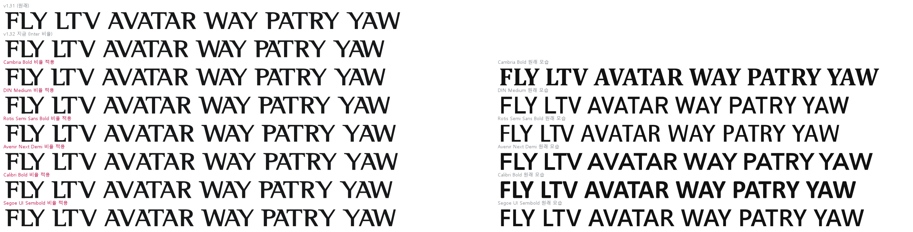
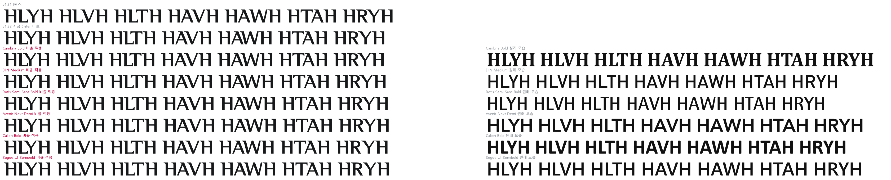

Helvetica Neue·Inter는 빼고, 이 컴퓨터에 있는 해외 서체 15종으로 다시 계산했습니다. 대상은 v1.32와 같은 18쌍입니다. 서체 파일은 고치지 않았고, 아래는 그림 시안입니다.
v1.32는 "각 쌍의 간격이 HH 간격의 몇 배인가"를 Inter와 똑같게 맞췄습니다. 그런데 전용서체는 로고 리듬에 맞춰 대문자끼리를 조여 두어 HH 간격이 유난히 좁습니다(56, Inter 149). 그래서 이 방식으로는 대각선 쌍도 함께 촘촘해집니다. 같은 방식으로 15종을 계산하면 Inter보다 넓어지는 서체는 Georgia·SF Pro뿐입니다(표의 "HH 기준" 열).
그래서 기준을 "대문자 평균 간격"으로 바꿨습니다. HH·HO·OH·OO 네 쌍의 평균이고, 둥근 글자 옆 간격까지 반영합니다(전용서체 84). 이렇게 하면 서체마다 v1.32보다 여유 있는 값이 나옵니다.
| 서체 비율 | 평균 간격 (평균 기준) | (참고) HH 기준 | 비고 |
|---|---|---|---|
| v1.32 지금 (Inter 비율) | 80.2 | ||
| Cambria Bold | 88.3 | 78.4 | 미리보기 |
| DIN Medium | 89.9 | 51.4 | 미리보기 |
| Rotis Semi Sans Bold | 104.7 | 54.9 | 미리보기 |
| Avenir Next Demi | 108.6 | 57.4 | 미리보기 |
| Calibri Bold | 108.7 | 57.1 | 미리보기 |
| Segoe UI Semibold | 118.0 | 58.1 | 미리보기 |
| v1.31 (원래) | 125.3 | ||
| Arial Bold | 126.7 | 66.7 | v1.31보다 넓음 |
| Corbel Bold | 130.5 | 71.5 | v1.31보다 넓음 |
| Trebuchet MS Bold | 134.7 | 68.3 | v1.31보다 넓음 |
| Candara Bold | 138.3 | 74.1 | v1.31보다 넓음 |
| Georgia Bold | 144.2 | 170.0 | v1.31보다 넓음 |
| Futura Medium | 148.8 | 64.9 | v1.31보다 넓음 |
| Verdana Bold | 149.7 | 77.3 | v1.31보다 넓음 |
| SF Pro Display Semibold | 151.9 | 81.3 | v1.31보다 넓음 |
| Tahoma Bold | 164.6 | 79.3 | v1.31보다 넓음 |
값이 클수록 여유 있습니다. v1.32(80)보다 넓고 v1.31(125)보다 좁은 6종을 아래에 미리보기로 그렸습니다. Rotis Semi Sans는 회사 CI 서체의 바탕이 된 계열이라 성격이 가장 가깝습니다.


| 쌍 | v1.31 | v1.32 지금 | Cambria | DIN | Rotis | Avenir | Calibri | Segoe |
|---|---|---|---|---|---|---|---|---|
| AT | -160 | -210 | -205 | -190 | -175 | -175 | -195 | -180 |
| AV | -180 | -240 | -205 | -210 | -175 | -160 | -195 | -185 |
| AW | -145 | -255 | -205 | -220 | -205 | -185 | -205 | -200 |
| AY | -180 | -240 | -255 | -220 | -205 | -195 | -225 | -215 |
| FA | -100 | -180 | -130 | -150 | -130 | -140 | -155 | -150 |
| LT | -180 | -255 | -265 | -240 | -235 | -235 | -245 | -220 |
| LV | -180 | -285 | -290 | -280 | -255 | -245 | -275 | -250 |
| LW | -180 | -205 | -205 | -200 | -205 | -190 | -200 | -180 |
| LY | -180 | -305 | -340 | -310 | -290 | -285 | -310 | -285 |
| PA | -125 | -200 | -160 | -175 | -140 | -145 | -180 | -165 |
| RT | -60 | -5 | -15 | -45 | -45 | -70 | 45 | 15 |
| RV | -105 | -110 | -75 | -130 | -140 | -140 | -60 | -35 |
| RW | -70 | -115 | -80 | -135 | -120 | -130 | -60 | -65 |
| RY | -130 | -90 | -125 | -120 | -120 | -120 | -40 | -60 |
| TA | -145 | -155 | -185 | -135 | -120 | -120 | -140 | -130 |
| VA | -135 | -140 | -105 | -105 | -70 | -55 | -90 | -80 |
| WA | -75 | -160 | -120 | -125 | -115 | -90 | -115 | -110 |
| YA | -145 | -135 | -175 | -120 | -95 | -95 | -125 | -110 |
v1.32보다 오히려 더 붙는 쌍: Cambria 8쌍(AY LT LV LY RT RY TA YA) · DIN 5쌍(LY RT RV RW RY) · Rotis·Avenir 4쌍(RT RV RW RY) · Calibri 1쌍(LY) · Segoe UI 0쌍. 평균은 모두 v1.32보다 여유 있지만 쌍마다는 다릅니다.
음수가 클수록 붙습니다. 18쌍 이외의 간격과 글자 모양은 그대로입니다. 로고 이름에는 이 쌍들이 없어 로고는 바뀌지 않습니다.